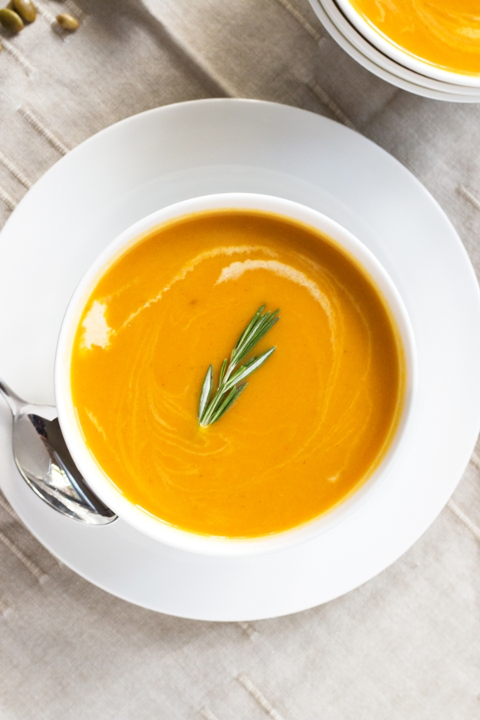
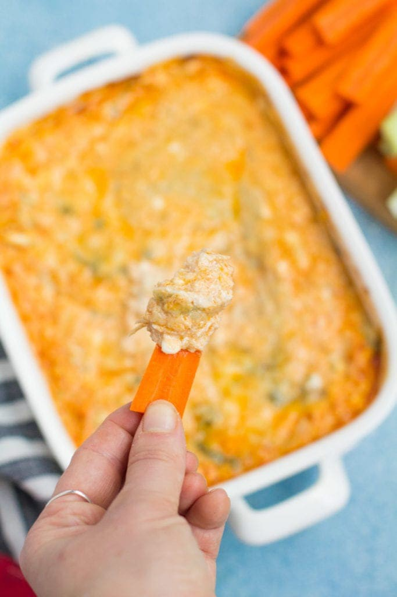
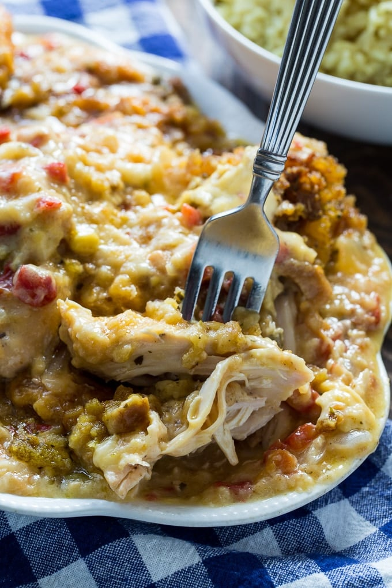
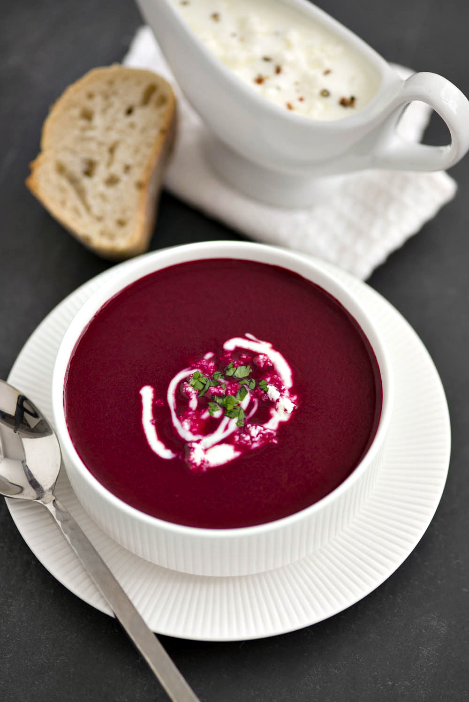
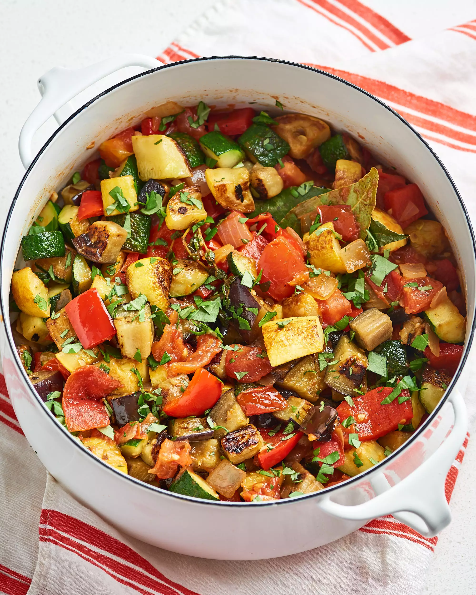

Carrot-Ginger Soup
Fresh carrots are pureed with sweet onions, garlic, and chicken or vegetable broth for this bright orange soup,
made even more vibrant-tasting with the addition of orange zest. Ginger adds a bit of spice to the finished
soup which adds a pleasing aroma and garnished with chives together form a wonderful blend of flavors.

Healthy Buffalo Chiken Dip
Cooking times will vary. You can have it going for a few hours on Low, or
for about half an hour or so on High. If you're able to, give it a good stir once in
a while to get all of the cheese mixed through. If you'd rather use an oven,
bake it at 350 degrees F (about 176 degrees C) for about 20-30 minutes, and make sure
to give it a good stir once it's out of the oven! And feel free to make it your own with
your favorite cheeses, spices, even adding a little bit of extra sauce for some more heat
if you prefer!

Chicken Stuffed Shell
Naxon was inspired by a story from his mother which told how back in her native Lithuanian
town, her mother made a stew called cholent, a traditional Jewish stew, which took several
hours to cook in an oven. A 1950 advertisement shows a slow cooker called the "Simmer
Crock" made by the Industrial Radiant Heat Corp. of Gladstone, NJ. Chicken as food has
evolved over the ages and it is still one of the favorites serverd meals in many homes
today.
Beet Soup With Greek Feta And Dill

Roasted Beetroot Soup With Feta Yogurt Dressing- Recipe. Hello! Do you fancy making a delicious beetroot soup recipe?
Also a perfect starter for an evening entertaining friends. Don’t you think so too?
This Roasted Beetroot Soup is so easy to make, just click above to read the detail's guide.

Ratatouille
Ratatouille is Pixar’s story about a delicious meal, Remy, in the french culinary world and
relatioships. As a food film it touches on many different issues in the food industry;
women in the kitchen, sell-out chefs, even the problematic symbiotic relationship
between restaurants and critics. There are many layers to this animated film.
Vegetable Soup

This Nigerian okro soup is quick and easy to put together; it's a healthier,
low-calorie option from the traditional African okra soup. It's Perfect for
lunch or dinner. The best part? it's ready in 30 minutes!
Okro pepper soup is a tasty variation of this dish. Adding pepper soup seasoning
adds so much depth and flavor. Reduce the amount of habanero as the pepper
soup spice packs some heat.